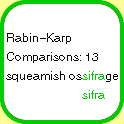

|  |
By string searching I do not mean full regular expression matching, which is typically done through the construction and lazy evaluation of a finite automaton. Yes, a worthwhile subject, but today's lesson harks back to a more primitive world, where our task is less general: given1 search text "a" of length N and a pattern "p" of length M, where (if at all) does p occur within a? In all cases we will assume that M << N (M is very small compared to N.)
As with many tasks, there is a straightforward method for the this one that's hard to screw up. As usual, we call it "brute force."2 If performance is not a consideration (for example, if the string lengths are known to be very small), or if you believe simplicity is more important than actually completing the task at hand3, brute force may be entirely satisfactory. The mechanism is to iterate over "a" and, at each letter, compare the sequence against "p" until all letters match (success) or the end of the alphabet is reached (failure.) See it in action4.
Unfortunately, brute force string searching can reach nearly N*M5 comparisons in the worst case. This lacks. It's rather unlikely that you'll hit such a limit, particularly if the alphabet is large, but when dealing with small alphabets or (heaven forbid) binary data, the number of comparisons could be many times N. For example, check out this unfortunate worst-case scenario6 search. Ouch.
It seems silly to repeatedly compare the pattern to the same input text. For example, in the preceding example, after 00001 failed to match against 00000, why do we take up again at the second zero in the search text? We already know that the first three zeroes will match. The Knuth-Morris-Pratt algorithm, our next customer, takes advantage of the information provided by failures. It does so by building a table of values7 that correspond to places the pattern might fail to match. The values in the table indicate where the matching process should resume once the pattern has been advanced. There is an initial cost to building this table, but fortunately it is proportional to M and therefore inconsequential. Watch it fly8 on the very case that gave our Neanderthal algorithm hives.
One subtle but important advantage of the Knuth-Morris-Pratt algorithm is that it never backs up over the text being searched; it only moves forward. This implies that the worst case requires N + M comparisons, but also that it can be used effectively on sequential access media such as tape drives9 without performing extensive buffering (or for that matter, any at all.)
Great! We have a linear search. On the surface, all is right with the string world. But the bogeyman of the real world lurks. Knuth-Morris-Pratt is unlikely to do much better than brute force on typical real world string searches, because normal searches do not involve seeking repetitive patterns within repetitive text. And most of us don't do much searching straight off the tape drive, so backing up is normally not a problem.
Let's get clever. Since we're advancing the pattern from left to right through the search text, perhaps we can profit by doing our comparisons from right to left. In this way, we spot a mismatch further along in the process than we would by comparing from left to right. We'll also capitalize on more information we haven't been using: the character in the search text that caused the mismatch.
Thus we arrive at the Boyer-Moore algorithm. We'll build another table of values10, one for each letter that could occur in the text or pattern (this is the "alphabet.") The value for each letter is the number of characters forward the pattern can be skipped if the mismatch was due to that character in the search text. Stand agape as you watch this one11 and realize that, although it has a worst case of N + M comparisons, it will often12 take only N/M comparisons.
Our final algorithm takes a totally different approach, using cool properties of mathematics to earn its linear nature. Imagine for a moment that we were to build a giant hash table, where the keys were all possible M-character sequences from the search text. Once built, we could just look up the pattern in the hash table and be done! Unfortunately this would potentially require significant memory, and force us into the worst-case. Also, it would seem that computing the hash value of each sequence would be as expensive as simply comparing it to the pattern. Looks like a big loser.
But wait! Math is our friend. There are a few things we can do here. We don't actually have to store the hash table values; if we precalculate the hash value of the pattern, and then compare each value from the text against it, we can quit once we have a match. And, more importantly, we can calculate the hash value for a sequence starting at the nth character in the text by utilizing the hash value of the sequence starting at the (n-1)th character and applying a couple simple operations. The mathematics involved are beyond the scope of this article, but cryptography literature abounds with applications.
So we arrive at the Rabin-Karp algorithm. The size of the theoretical hash table can be as large as we want, since we don't need storage; I'll choose a really big number that will still fit in a long (with room for the operations done upon the current hash value.) Take a look at the source to appreciate the mathematical wizardry involved, and then check out the algorithm in action13.
The alert reader will have noticed that this search is not completely reliable. A match indicates that the pattern has the same hash value as the identified text, but despite our very large value of q, hash collisions are possible. To be correct, upon a hash collision we should verify that the pattern and text are identical. Because of this, Rabin-Karp has a technical worst-case of M*N (because we could have a hash collision everywhere, and require M comparisons to check each one out) but will typically be linear.
Each of these algorithms has advantages. Brute force is the simplest to implement, Knuth-Morris-Pratt the fastest on binary data, Boyer-Moore the fastest in the typical case, and Rabin-Karp could (if the hash table were actually built) enable constant time searches for multiple patterns if they were of a fixed length. Identifying other pluses and minuses is left as an exercise for the reader.
I leave you with this thought: the Java library function
java.lang.String.indexOf(String str, int fromIndex) uses brute force to
determine whether the supplied string is a substring of the object. Our
high-tech algorithms were not interesting to the authors of the Java
String class.
Perhaps they decided that the overhead that these algorithms require for
their precalculations was too great to be worthwhile in the common case.
Perhaps they had to rush it out the door. Who knows? Believe whatever
helps you sleep at night. 
Hey kids! Try your own searches! Just don't make the search text too long...
-- Paul Phillips <paulp@go2net.com>
has a ball with strings.
Source to this article, as a
gzipped tar file or
zip file.